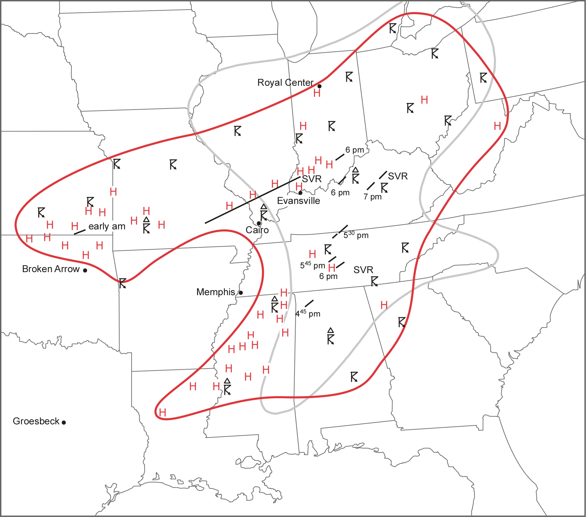

Acknowledgements: This work would not have been possible without Chesley McColl and Gil Compo (NERSC; 20CRv3 Data Access), the NIU Center for Research Computing and Data (Metis Supercomputer), and NCAR Advanced Research Computing Grant UNID0007 (Derecho Supercomputer)
March 18, 1925, was one of the most notable severe weather episodes ever observed. This outbreak included the Tri-State Tornado, the longest tracked & deadliest tornado in U.S. history.
Overview of the March 18, 1925 outbreak. The area of observed storms and hail are notated in the red outline, and known tornadoes, hail, and severe storms annotated (Figure 6 from Maddox et al. 2013).
More Background Information
1) Can we create a reasonable representation of this event in a convection-allowing ensemble?
2) How might changes to the global climate system since 1925 influence a similar event if it occurred today?
3) How might projected climate change impact a future severe weather outbreak with similar characteristics?
- All 30 selected 20CRv3 members supported a tornado outbreak (multiple separate AFWA Tornado swaths > EF0 intensity) in the historical simulations, which overlapped the area of observed storms and hail from March 18, 1925.
- 27 of the 30 historical simulations had continuous AFWA Tornado swaths (>EF 0 intensity) that were at least 100 km in length.
- 8 of these had a continuous EF0+ AFWA Tornado swath > 250 km, similar in length to the likely continuous portion of the Tri-State Tornado (Johns et al. 2013).
- All ensemble members had cyclic tornado families exceeding 200 km.
- All 30 present day and end 21st century high emission simulations also supported a tornado outbreak across the same region.
Cumulative density frequency plots showing grid point exceedance for several relevant measures of severe weather within the models during the simulation period (18 UTC March 17 – 12 UTC March 19). Blue lines show the 30 historical simulations, green lines are the 30 present day simulations, and Red lines are the 30 End 21st century SSP5-8.5 simulations (the range is shaded, and the maximum, median, and minimum ensemble members are noted).
A couple things stand out from these plots.
The changes between the historical and the present day simulations are relatively subtle (interestingly, there are slight decreases in the total number of grid points for most metrics for the present day simulations, compared to historical).
However, the end 21st century high emissions (SSP5-8.5) scenario simulations show a larger range of outcomes, and with the “high-end” simulations showing large increases in all metrics, especially in W (updraft velocity) and UH (updraft helicity, a proxy for rotating updrafts). This is consistent with the existing body of literature on severe storms and climate change, which suggests increases in the favorable ingredients for severe storm events, but more variability.
Historical simulations were run using a high-resolution WRF ensemble, using 20th Century Reanalysis data (version 3).
Future simulations were generated using CESM2 data (CMIP6), and the Pseudo-Global Warming technique.